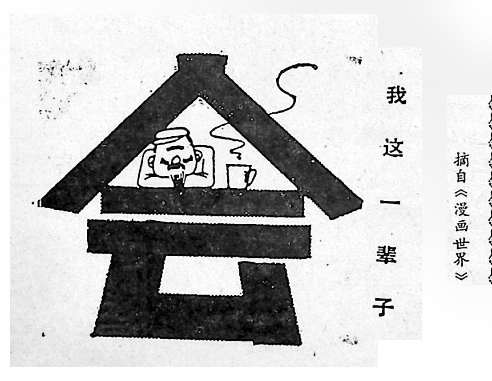

佚名 《人事》1987年第6期（总第21期），第44页（原载《漫画世界》）
我这一辈子
My Whole Life
- Text in the drawing
- 会（drawn as the building）
Meeting (the character drawn as the building) - Description
- The character for “meeting” is drawn as a house; up in its roof a contented cadre sits with a steaming cup of tea.
- Note
- 会, “meeting,” is also the second syllable of 开会, “to hold a meeting”; the cadre has spent his entire career inside meetings.
- Artist
- Unattributed 佚名
- Reprinted from
- 《漫画世界》 — Manhua shijie (Cartoon World)
- Published in
- 《人事》1987年第6期（总第21期）, p. 44
- Themes
- Formalism · Bureaucratism

Cite
Unattributed, “我这一辈子” [My Whole Life], Renshi (Personnel) 《人事》, 1987, no. 6, p. 44.